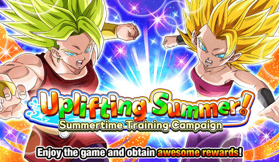
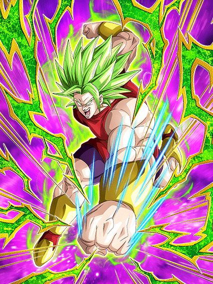
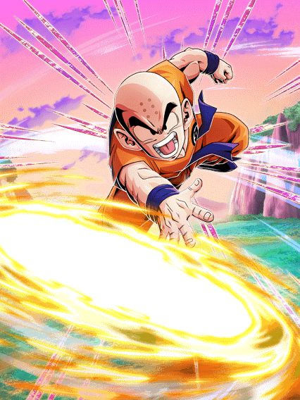

Fato: Ninguém se importa com isso.
Se a celebração do Yamcha, estando entre o dia dos saiyajins e a golden week já teve pouca gente fazendo summon, imagine uma celebração entre o ANIVERSÁRIO e a CELEBRAÇÃO DE DOWNLOAD
Só tristeza por aqui.

Parabéns ao dokkan por criar o primeiro card com uma leader skill pra ninguém 🔥
Sério, parece q pegaram esse card, botaram numa caixa e abandonaram num canto aleatório, a kale tá literalmente sozinha, é um card solitário
Vamo lá, a kale precisa muito (é praticamente obrigatório) de pelo menos 1 aliado do universo 6, se não ela não tem metade do kit, e isso é impossível
E antes de prosseguir com o kit, é obrigatório mencionar que a kale tem facilmente as PIORES animações pra um dokkan fest, chega a ser ridículo o quão ruins elas são
Continuando, sem um aliado universo 6 a kale perde um adicional de 70% de ser um super e como ela também perde 160% de ATK e DEF e não ganha defesa no super, ela vai ficar super frágil e vc vai ser varrido se usar ela fora do próprio time, além de que nesses supers vc ganha 20% de redução de dano, então se vc fizer só 1, não vai adiantar de nada
E eu não sei se é perceptível ainda mas não tem nenhum do universo 6 card 100% decente pra ajudar a kale, oq deixa ela sozinha em um time com um monte de personagens q não foram feitos pros eventos recentes
Claro, tem exceções, tipo a caulifla teq, ela realmente é muito boa, mas só pelo desvio mesmo, já q ela não faz mais nada
Falando da caulifla, é bom q vc tenha uma no time, já q assim vc pode transformar a kale no turno 4 ao invés do 6 dando super attack (isso se ela der pelo menos 2 supers por turno)

A kale transformada tem pelo menos a ofensiva no máximo, mas é basicamente só isso já q ela tem 50% de chance de defesa ativa e perde 160% de DEF sem um universo 6 no time
Quando ela estiver com um aliado a defesa ativa fica garantida oq já melhora o card já q ela pode lançar 4 supers e agora ela ganha defesa no super então ela vira um tank real.
Mas no geral, mesmo sem um aliado ela é muito melhor transformada já q ela consegue lançar os adicionais dela e se as estrelas se alinharem vc pega a defesa ativa q ajuda
Mas é isso, a kale seria um card top 5 ou 6 fácil se não fosse por ela ser completamente restringida pelo time horrível dela, e infelizmente o time não vai ganhar buffs o suficiente antes que q ela comece a envelhecer..
(Atualização 2024: ela ganhou buffs antes de envelhecer, desbloqueamos o good ending)
")
Existem cards ruins, existem cards MUITO ruins, existe o raditz phy, e então existe essa desgraça aqui.
Esse card é completamente inútil, eles não tem defesa boa e só dão um dano q é miserável se o inimigo tiver com debuffs, nem as animações desse card são boas, nem os links, e pra completar, nem a kale esse card ajuda, ele realmente não serve pra nada.

Eles se seguraram muito aqui.
Esse já foi um dos cards mais quebrados do jogo, e infelizmente elas não voltaram ao trono
Elas tem o problema igual aos Z boys, stackam muita defesa mas não tem uma redução de dano ou defesa ativa pra ajudar elas, apesar de elas buildarem uma chance maneira de desvio a cada ataque feito, mas do mesmo jeito q os Z boys, se elas tomarem um super logo no começo vc vai de comes e bebes.
No geral até foi um eza decente e elas ajudam a kale, mas não adianta um time de 7 personagens ter só 3 bons e a kale e caulifla tem suas dificuldades no começo da partida.

Bom, esse cara foi promovido de card de world tournament pra.. card de world tournament de novo.
Sei lá, eu gosto desse card mas ele é completamente inútil se não tiver uns 5 inimigos, ele stacka em ambos supers mas não tem stats bons e no geral ele não tem nada de muito útil
Além de q, pô, ele lança um super adicional garantido se tiverem 6 inimigos ou mais, onde vc vai achar isso sem ser no world tournament?
Você chegou ao fim dessa página!
Obrigado por ler tudo, e fica a vontade pra ver outras